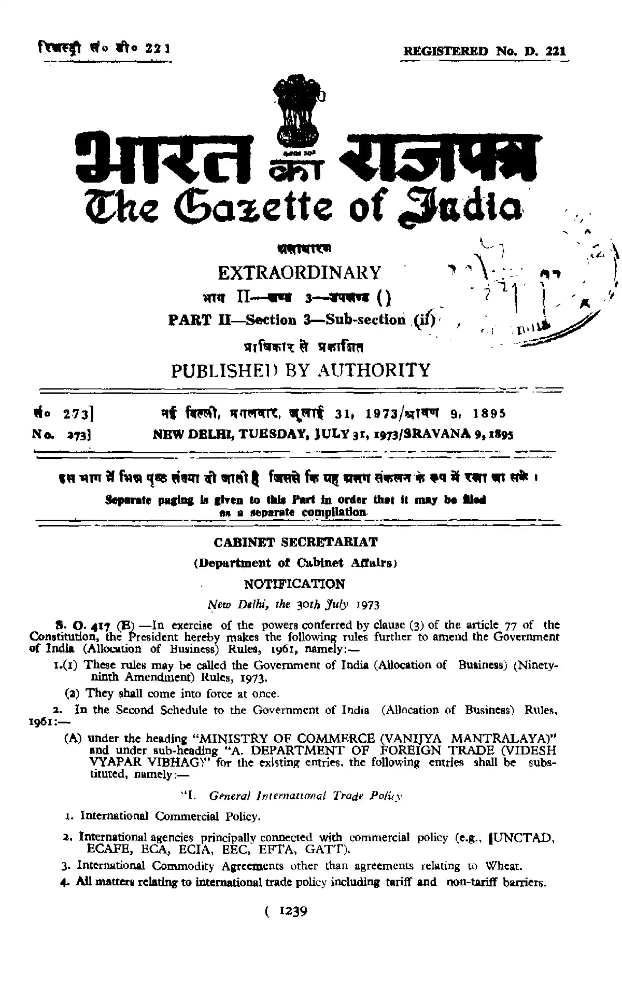
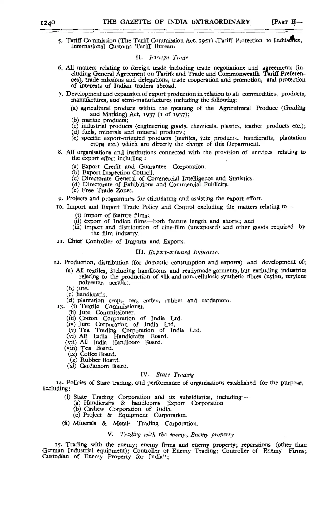
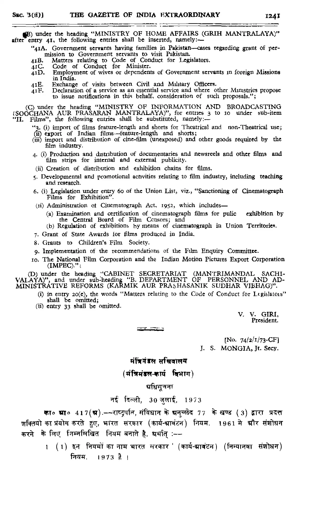
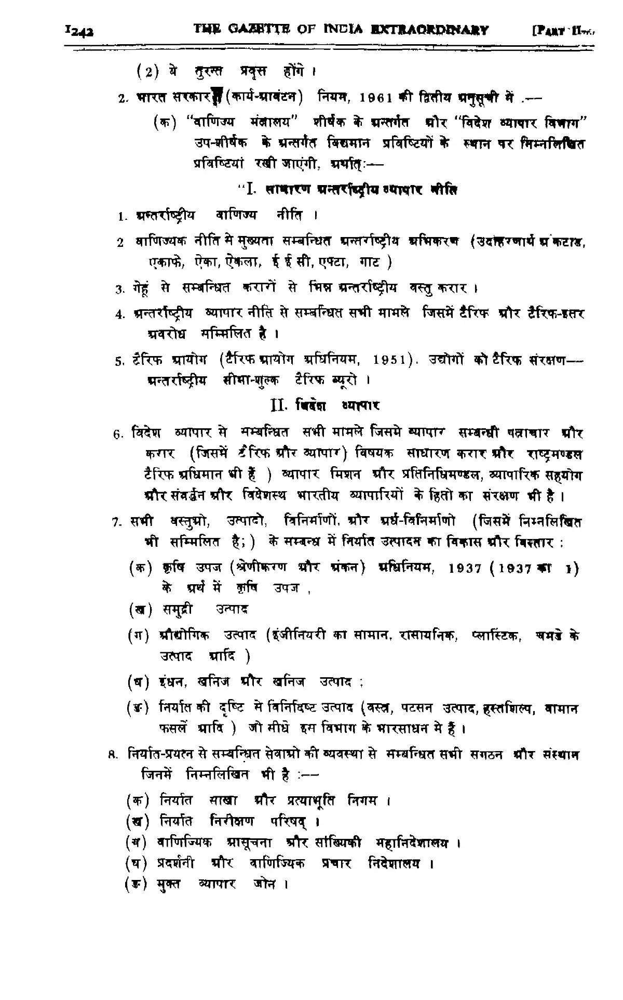
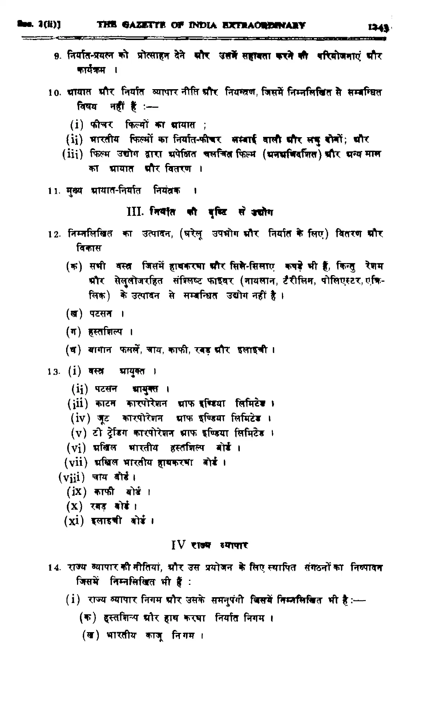
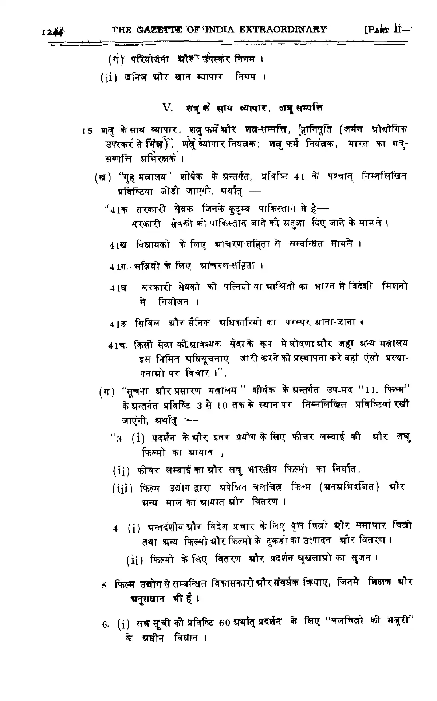
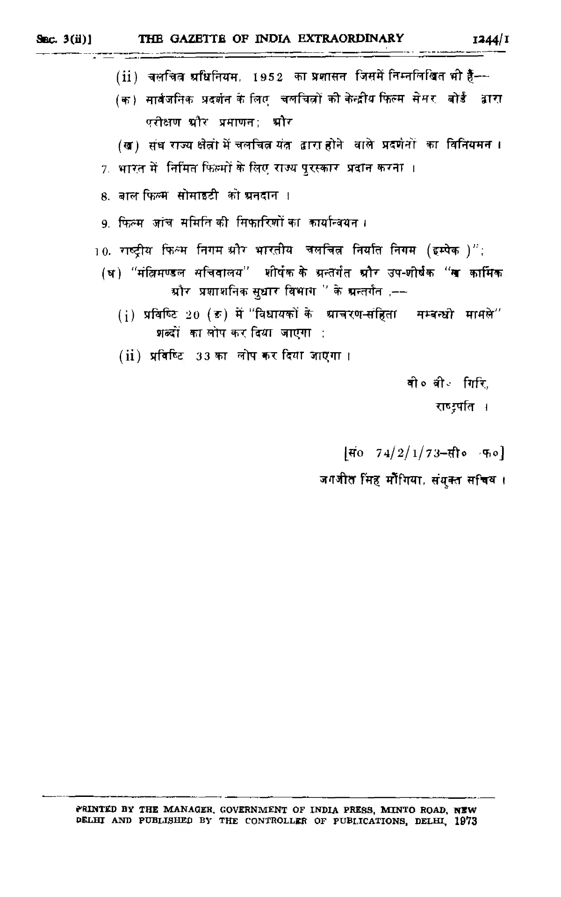

Amendment #99 (S.O. 417(E), 1973)
5 changes: 0 to the First Schedule, 5 to the Second Schedule. 5 applied
What it did to the ministries
The order, page by page
Page 1 of 8

1Schedule 2 › MINISTRY OF COMMERCE › DEPARTMENT OF FOREIGN TRADE
- I General International Trade Policy
- 1. International Commercial Policy.
- 2. International agencies principally connected with commercial policy (e.g., [UNCTAD ECAFE, ECA, ECIA, EEC, EFTA, GATT).
- 3. International Commodity Agreements other than agreements relating to Wheat. 4- All matters relating to international trade policy including tariff and non-tariff barriers. ( 1239 [PART -
- 5. Tariff Commission (The Tariff Commission Act, 1951),Tariff Protection to Industries International Customs Tariff Bureau
- II. Foreign Trade
and 44 more
- 6. All matters relating to foreign trade including trade negotiations and agreements (including General Agreement on Tariffs and Trade and Commonweatlh Tariff Preferences), trade missions and delegations, trade cooperation and promotion, and protection of interests of Indian traders abroad.
- 7. Development and expansion of export production in relation to all commodities, products manufactures, and semi-manufactures including the following:
- a. agricultural produce within the meaning of the Agricultural Produce (Grading and Marking) Act, 1937 (1 of 1937)
- b. marine products
- c. industrial products (engineering goods, chemicals, plastics, leather products etc.)
- d. fuels, minerals and mineral products
- e. specific export-oriented products (textiles, jute products, handicrafts, plantation crops etc.) which are directly the charge of this Department.
- 8. All organisations and institutions connected with the provision of services relating to the export effort including:
- a. Export Credit and Guarantee Corporation.
- b. Export Inspection Council.
- c. Directorate General of Commercial Intelligence and Statistics.
- d. Directorate of Exhibitions and Commercial Publicity.
- c. Free Trade Zones.
- 9. Projects and programmes for stimulating and assisting the export effort.
- 10. Import and Export Trade Policy and Control excluding the matters relating to---
- i. import of feature films
- ii. export of Indian films-both feature length and shorts; and
- iii. import and distribution of cine-film (unexposed) and other goods required by the film industry.
- II. Chief Controller of Imports and Exports.
- III. Export-oriented Industries
- 12. Production, distribution (for domestic consumption and exports) and development of:
- a. All textiles, including handlooms and readymade garments, but excluding industries relating to the production of silk and non-cellulosic synthetic fibres (nylon, terylene polyester, acrylic).
- b. jute.
- c. handicrafts.
- d. plantation crops, tea, coffee, rubber and cardamom.
- 13.
- i. Textile Commissioner.
- i. Jute Commissioner.
- iii. Cotton Corporation of India Ltd.
- iv. Jute Corporation of India Ltd.
- v. Tea Trading Corporation of India Ltd.
- vi. All India Handicrafts Board.
- vii. All India Handloom Board. (viii) Tea Board.
- ix. Coffee Board.
- x. Rubber Board.
- xi. Cardamom Board.
- IV. State Trading
- 14. Policies of State trading, and performance of organisations established for the purpose including: (1) State Trading Corporation and its subsidiaries, including-
- a. Handicrafts & handlooms Export Corporation.
- b. Cashew Corporation of India.
- c. Project & Equipment Corporation.
- ii. Minerals & Metals Trading Corporation.
- V. Trading with the enemy; Enemy property
- 15. Trading with the enemy; enemy firms and enemy property; reparations (other than German Industrial equipment); Controller of Enemy Trading; Controller of Enemy Firms Custodian of Enemy Property for India
applied at schedule 2 › ministry MINISTRY OF COMMERCE › department A in the Rules after #99
read page break
Page 2 of 8

Page 3 of 8

2345after Schedule 2 › MINISTRY OF HOME AFFAIRS › entry 41
- 41A. Government servants having families in Pakistan--cases regarding grant of permission to Government servants to visit Pakistan.
- 41B. Matters relating to Code of Conduct for Legislators.
- 41C. Code of Conduct for Minister.
- 41D. Employment of wives or dependents of Government servants in foreign Missions in India.
- 41E. Exchange of visits between Civil and Military Officers.
- 41F. Declaration of a service as an essential service and where other Ministries propose to issue notifications in this behalf, consideration of such proposals.
applied at schedule 2 › ministry MINISTRY OF HOME AFFAIRS › part I › group_heading The following subjects which are relatable to… in the Rules after #99
Schedule 2 › MINISTRY OF INFORMATION AND BROADCASTING › II. Films › entry
- i. import of films feature-length and shorts for Theatrical and non-Theatrical use export of Indian films-feature-length and shorts import and distribution of cine-film (unexposed) and other goods required by the film industry.
- 4.
- i. Production and distribution of documentaries and newsreels and other films and film strips for internal and external publicity.
- ii. Creation of distribution and exhibition chains for films.
- 5. Developmental and promotional activities relating to film industry, including teaching and research.
- 6.
and 7 more
- i. Legislation under entry 60 of the Union List, viz., "Sanctioning of Cinematograph Films for Exhibition (11) Administration of Cinematograph Act, 1952, which includes
- a. Examination and certification of cinematograph films for pulic exhibition by the Central Board of Film Censors; and
- b. Regulation of exhibitions by means of cinematograph in Union Territories.
- 7. Grant of State Awards for films produced in India.
- 8. Grants to Children's Film Society.
- 9. Implementation of the recommendations of the Film Enquiry Committee.
- 10. The National Film Corporation and the Indian Motion Pictures Export Corporation (IMPEC).
applied at schedule 2 › ministry MINISTRY OF INFORMATION AND BROADCASTING › group_heading II › entry 3 in the Rules after #99
Schedule 2 › CABINET SECRETARIAT › DEPARTMENT OF PERSONNEL AND ADMINISTRATIVE REFORMS › entry 20 › item e
applied at schedule 2 › ministry CABINET SECRETARIAT › department B › group_heading III › entry 20 › item e in the Rules after #99
Schedule 2 › CABINET SECRETARIAT › DEPARTMENT OF PERSONNEL AND ADMINISTRATIVE REFORMS › entry 33
applied at schedule 2 › ministry CABINET SECRETARIAT › department B › group_heading IV › entry 33 in the Rules after #99
Page 4 of 8

Page 5 of 8

Page 6 of 8

Page 7 of 8

Page 8 of 8
How this document was read
Edits to the reading
| Date | By | Edit | Before → after |
|---|---|---|---|
| 12 November 2026 | claude | word corrected | |
| 12 November 2026 | claude | word corrected |
From the Government of India (Allocation of Business) Rules, 1961 and their amendments, as published by the Cabinet Secretariat (cabsec.gov.in), read by orgpedia. The readings of the older scanned gazettes have known gaps.